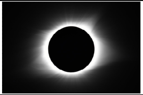
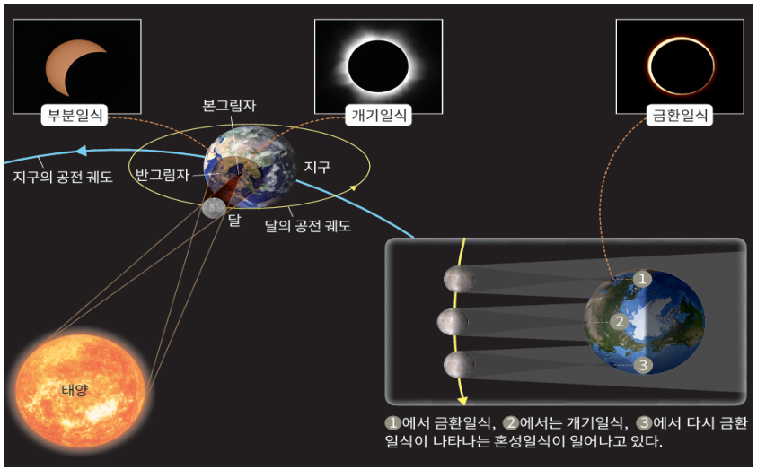
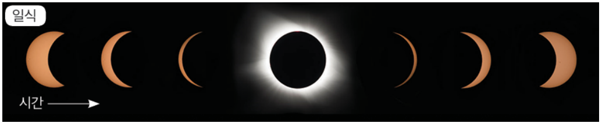
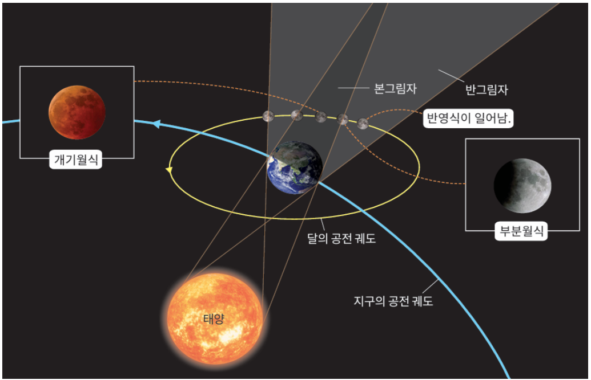
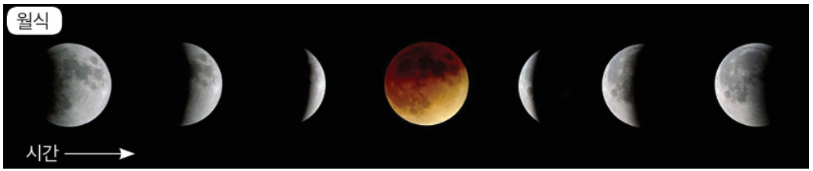
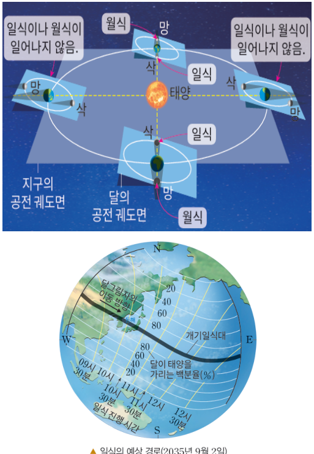
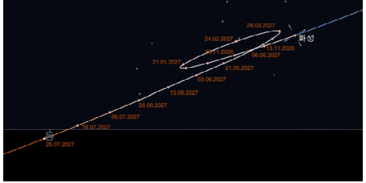
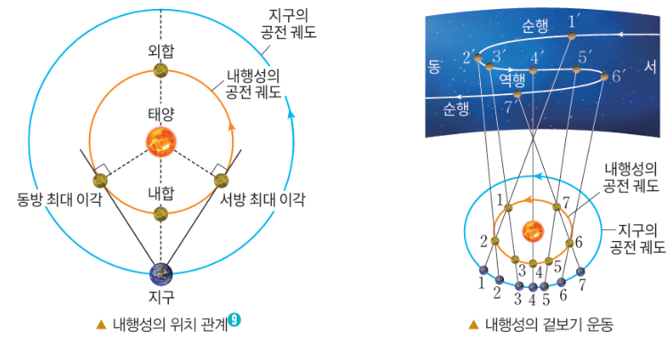
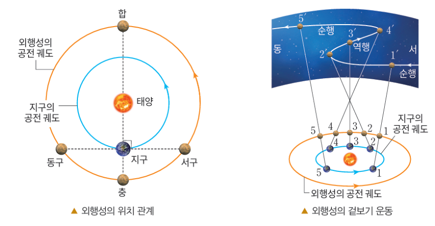

학습 목표 (Learning Objectives)
- ✓태양 - 지구 - 달의 운동으로 일어나는 일식과 월식 현상의 원리와 진행 방향을 설명할 수 있다.
- ✓태양계 모형을 이용하여 내행성과 외행성의 겉보기 운동(순행·역행·유)과 위상·시직경 변화를 설명할 수 있다.
핵심 개념 체크리스트
학습을 마친 개념은 직접 체크해보세요!
2026 사대부고 고2 지구과학 자체 교재 원문 기반
동기 유발 · 생각해보기
수업 시작 전 핵심 질문
Q. 낮 하늘의 태양이 달에 의해 완전히 가려져 코로나가 빛나는 개기일식은 장관을 이룬다. 그렇다면 매달 음력 초하루(삭)마다 일식이 일어나지 않는 이유는 무엇이며, 먼 미래의 후손들도 개기일식을 볼 수 있을까?


💡 먼저 스스로 이유를 추론해 본 뒤 버튼을 눌러 확인해보세요!
✨ 과학적 해설 및 모범 답안
지구의 공전 궤도면(황도면)과 달의 공전 궤도면(백도면)이 약 $5^\circ$ 기울어져 있기 때문에 모든 삭과 망마다 태양-지구-달이 정확히 일직선에 놓이지 않아 매달 식 현상이 일어나지 않습니다. 또한 달은 매년 지구로부터 약 $3.8\text{ cm}$씩 멀어지고 있어 먼 미래에는 달의 시직경이 태양보다 작아져 개기일식 대신 금환일식만 관측될 것입니다.
핵심 개념 1
1. 일식과 월식 (Solar & Lunar Eclipse)
(1) 일식(태양-달-지구)과 월식(태양-지구-달) 완벽 비교 (교재 p.53~55)
- •식 현상이 매달 일어나지 않는 이유: 달의 공전 궤도면(백도면)이 지구의 공전 궤도면(황도면)에 대해 약 $5^\circ$ 기울어져 있어 두 궤도면의 교선 부근에 달이 위치할 때만 일식과 월식이 일어난다.
- •⭐ 가려지는 시작 방향 암기 팁:
▸ 일식: 지구에서 볼 때 태양이 가만히 있고 달이 서(오른쪽) ➔ 동(왼쪽)으로 공전하며 태양 앞을 지나가므로 태양의 오른쪽(서쪽)부터 가려지기 시작한다.
▸ 월식: 지구의 본그림자 속으로 달이 서(오른쪽) ➔ 동(왼쪽)으로 공전해 들어가므로 달의 왼쪽(동쪽)부터 가려지기 시작한다.
| 구분 | 일식 (Solar Eclipse) | 월식 (Lunar Eclipse) |
|---|---|---|
| 배열 순서 및 달의 위상 | 태양 - 달 - 지구 / 삭 (음력 1일경) | 태양 - 지구 - 달 / 망(보름달) (음력 15일경) |
| 종류 및 특징 | • 개기일식: 달의 본그림자 지역 (채층·코로나 관측 가능) • 부분일식: 달의 반그림자 지역 • 금환일식: 달이 지구에서 멀어 시직경이 태양보다 작을 때 가장자리 고리가 보임 | • 개기월식: 달 전체가 지구 본그림자에 진입 ➔ 지구 대기를 통과하며 굴절·산란된 붉은 빛이 달에 반사되어 검붉은 달(블러드문)로 보임 • 부분월식: 지구 본그림자에 일부 진입 • 반영식: 지구 반그림자에 진입 |
| 가려지기 시작하는 방향 | 태양의 오른쪽(서쪽)부터 가려짐 | 달의 왼쪽(동쪽)부터 가려짐 |
| 관측 가능 지역 및 지속 시간 | 달의 그림자가 작아 매우 좁은 지역에서만 짧게 관측 (본그림자 서→동 이동) | 지구 본그림자가 커서 밤이 되는 모든 반구에서 길게 관측 가능 |

" class="max-h-72 w-auto object-contain rounded-lg group-hover:scale-[1.02] transition duration-300 cursor-zoom-in" onclick="openLightbox(this.src, '교재 그림: <일식의 진행 과정 (오른쪽/서쪽부터 가려짐)>')" loading="lazy" />
" class="max-h-72 w-auto object-contain rounded-lg group-hover:scale-[1.02] transition duration-300 cursor-zoom-in" onclick="openLightbox(this.src, '교재 그림: <월식의 원리 (본그림자와 반그림자)>')" loading="lazy" />
" class="max-h-72 w-auto object-contain rounded-lg group-hover:scale-[1.02] transition duration-300 cursor-zoom-in" onclick="openLightbox(this.src, '교재 그림: <월식의 진행 과정 (왼쪽/동쪽부터 가려짐)>')" loading="lazy" />
" class="max-h-72 w-auto object-contain rounded-lg group-hover:scale-[1.02] transition duration-300 cursor-zoom-in" onclick="openLightbox(this.src, '교재 그림: <지구 공전 궤도면과 달 공전 궤도면의 5° 기울기>')" loading="lazy" />
핵심 개념 2
2. 행성의 겉보기 운동과 위상 변화 (교재 p.56~57)
(1) 순행 · 역행 · 유 및 내행성과 외행성의 운동 비교
- •순행과 역행: 행성은 평소 배경 별자리에 대해 서 ➔ 동(반시계 방향)으로 이동(순행)하다가, 지구가 행성을 추월하거나 추월당하는 시기에 일시적으로 동 ➔ 서(시계 방향)로 이동(역행)하며 방향이 바뀌는 지점에서 잠시 멈춘 것처럼 보이는 유(留)가 나타난다.
- •⭐ 역행이 일어나는 위치 (시직경이 가장 크고 지구에서 가장 가까울 때!):
▸ 내행성(수성·금성): 공전 속도가 지구보다 빠르므로 내합 부근에서 역행한다.
▸ 외행성(화성·목성·토성 등): 공전 속도가 지구보다 느리므로 충 부근에서 역행한다.
| 행성 구분 및 주요 위치 | 배열 및 이각 | 위상 및 겉보기 크기(시직경) | 관측 가능 시간 및 하늘 방향 |
|---|---|---|---|
| 내행성 - 내합 | 지구 - 내행성 - 태양 | 삭 (가장 가까워 시직경 최대) | 태양과 함께 떠서 관측 불가 (내합 부근에서 역행!) |
| 내행성 - 외합 | 지구 - 태양 - 내행성 | 망 (가장 멀어 시직경 최소) | 태양 뒤에 가려 관측 불가 |
| 내행성 - 동방 최대 이각 | 태양의 동쪽 최대 각도 (금성 약 $48^\circ$) | 상현달 모양 / 크기 중간 | 해 진 직후 초저녁 서쪽 하늘 |
| 내행성 - 서방 최대 이각 | 태양의 서쪽 최대 각도 | 하현달 모양 / 크기 중간 | 해 뜨기 직전 새벽 동쪽 하늘 |
| 외행성 - 충 | 태양 - 지구 - 외행성 (이각 $180^\circ$) | 보름달(망) (가장 가까워 밝기·시직경 최대) | 해 질 때 동쪽에서 떠서 자정에 남중, 밤새도록 관측 (충 부근에서 역행!) |
| 외행성 - 합 | 외행성 - 태양 - 지구 (이각 $0^\circ$) | 시직경 최소 | 태양 방향이어서 관측 불가 |
| 외행성 - 동구 / 서구 | 태양-지구-외행성 각도 $90^\circ$ | 부푼 반달 모양 (초승달·그믐달 위상은 절대 나타나지 않음!) | • 동구: 초저녁 남쪽 ➔ 자정 서쪽 몰락 • 서구: 자정 동쪽 출현 ➔ 새벽 남쪽 |

" class="max-h-72 w-auto object-contain rounded-lg group-hover:scale-[1.02] transition duration-300 cursor-zoom-in" onclick="openLightbox(this.src, '교재 그림: <배경 별자리에 대한 행성의 순행·유·역행 궤적>')" loading="lazy" />
" class="max-h-72 w-auto object-contain rounded-lg group-hover:scale-[1.02] transition duration-300 cursor-zoom-in" onclick="openLightbox(this.src, '교재 그림: <내행성(금성)의 위치에 따른 위상, 시직경 변화 및 이동 방향(외합→동방최대이각→내합→서방최대이각)>')" loading="lazy" />
" class="max-h-72 w-auto object-contain rounded-lg group-hover:scale-[1.02] transition duration-300 cursor-zoom-in" onclick="openLightbox(this.src, '교재 그림: <외행성의 위치(합→서구→충→동구→합)와 충 부근에서의 역행>')" loading="lazy" />
Interactive Checkpoints
클릭하면 교재 빈칸 정답과 해설이 나타납니다
단원 개념 적용하기 & 확인 문제
Q1
교재 p.55 확인: 개기월식이 일어날 때 달이 완전히 보이지 않고 검붉은 색으로 보이는 까닭은 무엇인가?
모범 답안 및 해설
지구 대기를 통과하는 태양 빛 중 파장이 짧은 푸른빛은 산란되어 흩어지고, 파장이 긴 붉은빛은 대기에서 굴절되어 지구 본그림자 속의 달 표면까지 도달한 뒤 반사되기 때문입니다.
Q2
교재 p.56~57 핵심 체크: 금성(내행성)이 동방 최대 이각에서 내합으로 이동하는 동안 지구에서 관측되는 금성의 시직경(겉보기 크기)과 위상은 어떻게 변하며, 언제 어디서 관측되는가?
모범 답안 및 해설
지구와의 거리가 가까워지므로 시직경은 점점 커지고, 위상은 상현달(반달) 모양에서 초승달 모양으로 얇아집니다. 해가 진 직후 초저녁 서쪽 하늘에서 관측됩니다.